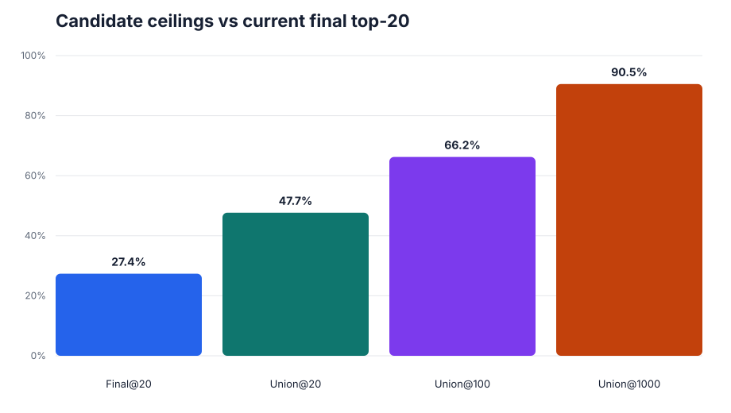
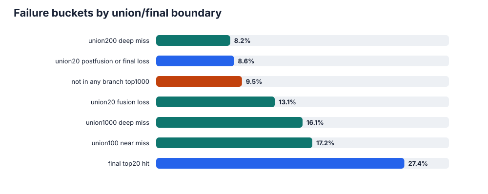
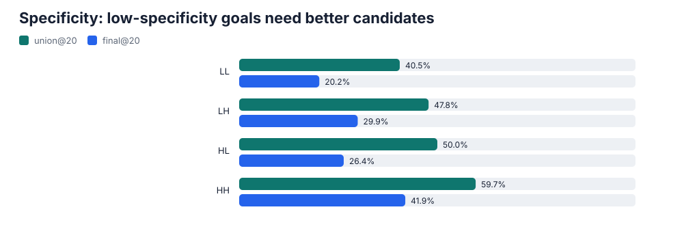
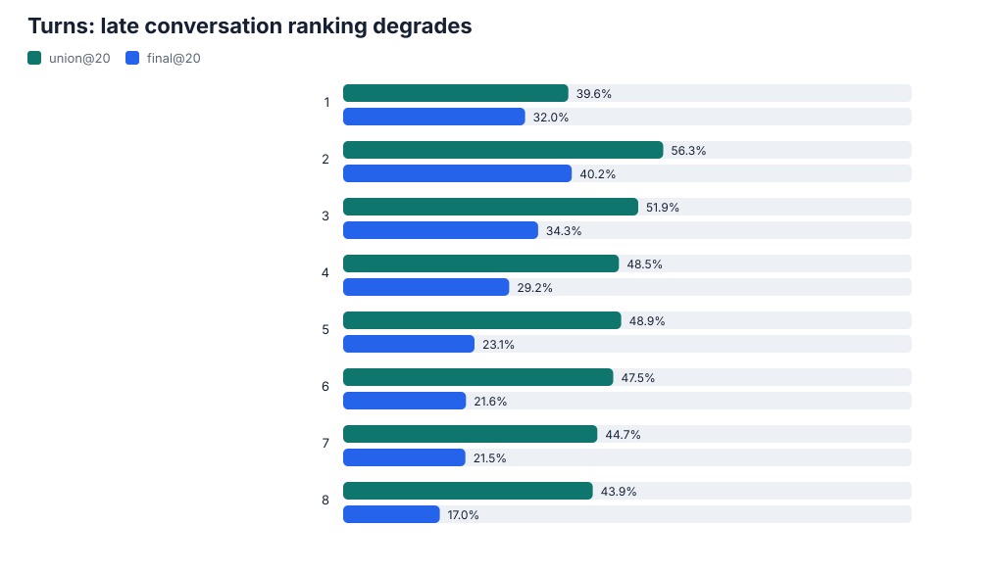
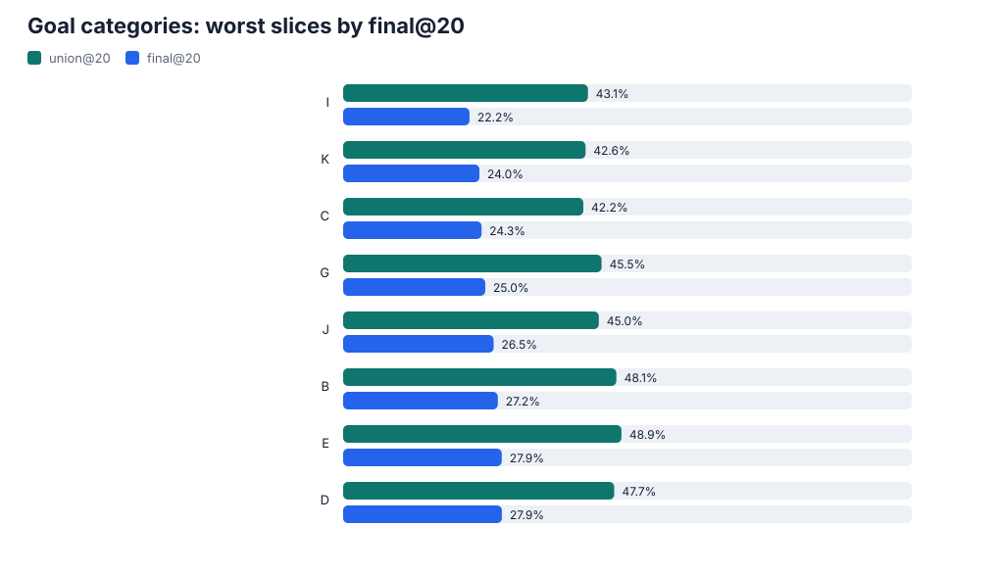
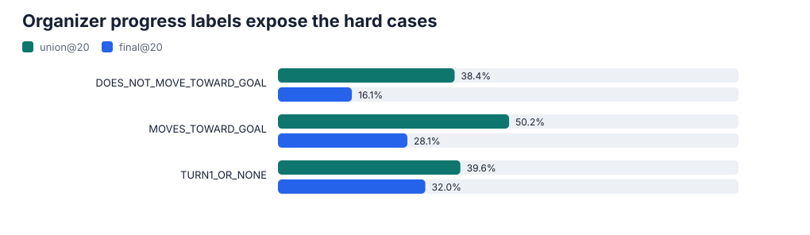
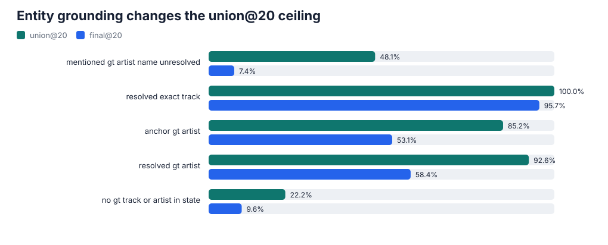
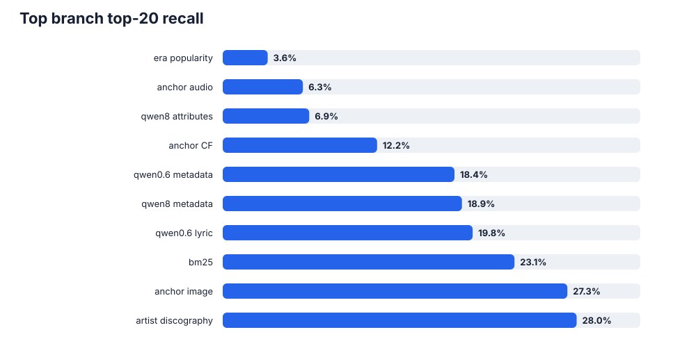

Why gold tracks miss final top-20 in v0plus_compiler_all_retrievers_devset, centered on union@20, state quality, retriever coverage, and whether the fusion stage should become a trained ranker.
This is not only a current-fusion problem. More than half of turns are not in union@20, and roughly one third are not in union@100. That is a real candidate-generation/state/retriever gap.
It is also not only a retriever problem. Union@20 is materially above final@20, and post-fusion demotions explain many recoverable losses. A trained ranker over union@100/200 is justified, but it should ship with state and post-fusion ablations.

| Mode | Meaning | Turns | Share | Hit@20 | NDCG@20 | Gap@50 | Miss share | Verdict |
|---|---|---|---|---|---|---|---|---|
| EXACT-named | GT = the song they named | 113 | 1.4% | 94.7% | 70.9% | 3.5% | 0.1% | solved |
| CONTINUATION | GT = deeper cut by an already-heard artist | 3,176 | 39.7% | 45.6% | 20.5% | 9.2% | 29.8% | reranker — GT in pool, ranking problem |
| NEW-ARTIST | GT = a brand-new artist | 3,765 | 47.1% | 9.8% | 3.9% | 67.1% | 58.4% | biggest+hardest — retrieval gap, intent-conditioned candidate generation |
| COLD-OPEN | turn 1, no history | 946 | 11.8% | 28.1% | 12.9% | 53.0% | 11.7% | cold start — popularity + cross-session CF |
| User cue | Role | Current state | Ideal state |
|---|---|---|---|
| "similar to / like / in the vein of X" | SEED | +1 → anchored | anchor ON (this is the one case binary gets right) |
| "X was great, now more / other / else" | SATISFIED | +1 → anchored | anchor OFF, decay — user got X, wants beyond it |
| "different from / not like / besides / instead of X" | CONTRAST | +1 → anchored | anchor OFF, optionally repel |
| X named in an earlier turn, NOT this one | HISTORY | +1 → anchored | DROP entirely from current targets |
| "not X / no more X / stop X" | REJECTED | -1 → hard drop | hard drop (already correct) |
| Item | Verdict | Stat | Detail |
|---|---|---|---|
| Genre/mood tags | good | 78% match | positive_tags overlap a GT tag on 78% of valid turns. Extraction vocab is fine. |
| Negative refs excluded | good | code-verified | resolver drops sentiment<0 from anchors; negatives only feed hard-drops. |
| Entity over-extraction | bad | 0.5 → 2.3 / turn | positive artist targets climb to ~2.3 by turn 3+ vs ~1 actually referenced forward. Carries old artists forward. |
| Contrast as positive | bad | qualitative | "not as intense as Pink Floyd" → Pink Floyd tagged +1 → became an anchor. Extractor sentiment/role error. |
| Year filter over-fires | bad | 29% drop GT | of turns with a year_range set, GT falls OUTSIDE it 29% of the time (580 miss@20). Soft-penalizes valid answers. |
| hidden_target_search | inert | 391 fires; 0 weighted-routing consumption | The routing tag fires in the trace, but routing_boost is empty, so the bug is non-consumption rather than non-extraction. |
| Rejection enforcement | dead | ~5% leak | 769 of 14,780 returned slots were a rejected artist/track despite "hard drop". Needs verification (multi-artist) but "no Bon Jovi → Bon Jovi" happens. |
Ask: "Dorothy is awesome... more ARTISTS with powerful female vocalists"
Anchored: Dorothy, Gun In My Hand
Why bad: The user already heard Dorothy and loved it. They’re asking for OTHER artists with the same vibe. But our system treats Dorothy as a search target (+1 anchor), so it keeps returning Dorothy-like tracks instead of bran...
Ideal: Dorothy should be marked “satisfied” (done, don’t search for it). The search should use the style tags (female vocalist, blues-rock) to find NEW artists with a similar sound.
Ask: "Funky Child is awesome... what else can you hit me with that kind [of vibe]"
Anchored: 11 artists: Eminem, Method Man, CZARFACE, Lupe Fiasco, Freddie Gibbs...
Why bad: The user only mentioned Funky Child just now, but our system drags in 11 artists from older messages (Eminem, Method Man, etc.) as active search targets. These old names flood the results, burying the fresh recommenda...
Ideal: Only Funky Child is relevant (and it's already heard — mark it 'satisfied'). All 11 old artists should be dropped from active search. Use classic/hip-hop style tags to find something new.
Ask: "...keen to discover something NEW now, a DIFFERENT artist entirely" than Enya
Anchored: Enya
Why bad: The user literally says they want something NEW and DIFFERENT — not Enya. But our system treats Enya as a positive search target (+1 anchor), so it finds more Enya-like music. The user is saying 'I'm done with this, s...
Ideal: Enya should be marked 'contrast' — meaning actively steer AWAY from Enya's sound. Use ambient/atmospheric style tags but search for genuinely different artists.
Ask: "...another band, completely DIFFERENT [from Tenacious D]. Heavy industrial dark"
Anchored: Tenacious D, Master Exploder
Why bad: The user says 'completely DIFFERENT from Tenacious D' and asks for heavy industrial music. But our system uses Tenacious D (a comedy rock band) as a positive search target, pulling results toward comedy rock — the exa...
Ideal: Tenacious D should be marked 'contrast' — meaning steer AWAY from it. The search should be driven by the style the user asked for: industrial, heavy, dark.
Ask: "I like Snow Patrol... just send more alternative rock, ANYTHING"
Anchored: Nothing But Thieves, MISSIO
Why bad: The user says 'I like Snow Patrol… just send more alternative rock, ANYTHING.' They want a wide net. But our system anchors on Nothing But Thieves and MISSIO — two bands from earlier in the conversation that the user...
Ideal: Drop Nothing But Thieves and MISSIO (they're history, not current). Snow Patrol is 'satisfied' (already discussed). Cast a wide net with broad alternative-rock style tags — the user literally said 'anything.'
| Feature | Evidence | Target slice |
|---|---|---|
| album-affinity | measured about +6pp Hit@20 ceiling; prototype before commit | continuation 62% |
| artist-recency (most-recent, weighted) | — | continuation diff-album |
| user-CF / demographic-popularity | — | new-artist popular ~23% of misses |
| genre/era-conditioned popularity | — | new-artist popular |
| is_new_artist | +1% reranker | novelty |
| constraint-satisfaction (year/reject/rarity-tag) | year drops GT 29% | discovery |
This is a behavioral/SEQUENTIAL rec problem — strongest features are behavioral (album, artist-recency, user-CF), NOT conversation-text. Sentiment doesn't route; play-history does.
| Hypothesis | Why not |
|---|---|
| Accept/reject sentiment routes mode | FLAT — yes!→47% cont, but-different→44%. Next play is the assistant's exploratory pick, not user sentiment. |
| Popularity bias buries the GT | NO — GT median pop 45 vs served 44 (equal). |
| Cover/version trap | NEGLIGIBLE — 18% of GTs have a cover, but we serve wrong-version-same-title in 0.1% of misses. |
| Session features / demographics as ranker inputs | 0 lift — candidate-constant within a turn. |
| Rarity-weighted (IDF) tags | WORSE than raw; tags cap ~0.19 hit@50. |
| Category routing per-turn | Impossible — category is session-level, mode mix identical across all 11. |
| Caveat | Why it matters |
|---|---|
| Response TEXT is unmeasured — the BIGGEST gap | lm_type=dummy; Codabench weights response quality and lexical diversity at 0.30 and 0.10 respectively, plus catalog diversity at 0.10. Run a real generator over dev predictions and measure response quality/diversity separately. |
| New-artist fix is unverified | genre/era popularity + cross-session user-CF on the new-artist cell (58% of misses) has NO counterfactual. Build train-only user/genre popularity + CF features, rerun, report nDCG@20 by mode. |
| Album-affinity upside corrected to ~+6pp ceiling | Measured counterfactual: 479 of 964 same-album misses are rescuable by a ranking boost (GT at fused rank 21-100). Still high-confidence, but prototype and measure before committing. |
| Mode taxonomy is partly circular | modes are defined by GT-artist-vs-history, then used to explain artist-history misses. Validate with human turn-intent labels (seed/satisfied/contrast/new) grounded in the user utterance, not the GT. |
| Candidate-pool consistency | union@100 ceiling assumes the CURRENT pool; album-injection / user-CF change the pool, so the 62% retriever-gap attribution shifts. Re-trace pools after any fix. |
| Blind-A distribution shift | dev = exactly 8 turns; blind-A = 1-22 turns. hit@20 decays 32%(t1)→17%(t8), so longer blind sessions are a real risk. Compare blind-A turn/anchor/intent distributions to dev. |
| nDCG@20 is the scored metric, not hit@20 | now added by mode (CONT 0.206 >> NEW 0.039 — direction robust). Re-state all future lever estimates in nDCG@20. |

Not in union@20: fix candidate generation, state, routing, or retrievers.
In union@20 but not final top-20: fix fusion, final ranker, post-fusion policy, or backfill/finalization.
In union@100 but not union@20: ranker can help, but retriever calibration and branch query quality still matter.
Not in union@100: treat as a deeper state/retriever/data-field gap.




| Category | Turns | Organizer goal examples | Final@20 | Union@20 | Union@100 | Rank gap | Not union@20 |
|---|---|---|---|---|---|---|---|
| I | 144 | play a specific globally popular song by exact title and artist | find modern electronic dance music that blends deep house grooves with soulful vocal elements or jazz influences. | 22.2% | 43.1% | 60.4% | 20.8 pp | 56.9% |
| K | 1,248 | discover multiple instrumental pieces from a broad era, particularly film scores or contemporary classical works, that evoke a timeless or classic feel. | discover multiple chill, instrumental lo-fi hip-hop tracks fro... | 24.0% | 42.6% | 62.8% | 18.7 pp | 57.4% |
| C | 464 | find one specific album remembered by its distinctive, dark, and abstract or unsettling cover art. | find one specific heavy metal album remembered by its distinctive, often dark or fantastical, cover art | 24.3% | 42.2% | 57.5% | 17.9 pp | 57.8% |
| G | 616 | find some positive and uplifting hip-hop tracks to boost my energy and put me in a good mood. | find multiple songs that convey intense emotional drama, particularly those expressing feelings of profound sadness, grie... | 25.0% | 45.5% | 66.2% | 20.4 pp | 54.5% |
| J | 616 | play one specific song that is known for its high popularity within its genre or era. | find a specific song from the early 90s that was a massive hit and widely recognized, but I can't recall the title or artist. | 26.5% | 45.0% | 64.1% | 18.5 pp | 55.0% |
| B | 1,136 | find a specific song by its exact lyrical phrase | find multiple songs by Anitta that focus on themes of female empowerment and self-confidence. | 27.2% | 48.1% | 65.5% | 20.9 pp | 51.9% |
| E | 760 | progress through a specific musical journey from classic EBM to modern synthpop and futurepop, emphasizing melodic elements and avoiding overly harsh industrial sounds | progress through a specific musical journey wit... | 27.9% | 48.9% | 68.4% | 21.1 pp | 51.0% |
| D | 688 | find one specific song from the Moana soundtrack that evokes a sense of epic journey and exploration, but the listener can't remember its exact title. | find one specific high-energy hip-hop song perfect for driving,... | 27.9% | 47.7% | 64.8% | 19.8 pp | 52.3% |
| A | 488 | find one specific instrumental track from "The Elder Scrolls Online Original Game Soundtrack" remembered by its distinctive orchestral sound, mood, or thematic quality (e.g., a battle theme, an exploration piece, or a... | 28.3% | 51.0% | 69.1% | 22.8 pp | 49.0% |
| F | 760 | find multiple electronic/dance tracks from the late 90s and early 2000s with specific characteristics (e.g., energetic, downtempo, vocal-focused) | find a specific Linkin Park song from a particular album and its orig... | 31.2% | 56.6% | 72.2% | 25.4 pp | 43.4% |
| H | 1,080 | find multiple songs from punk and hardcore punk artists with specific sub-genre characteristics, lyrical themes, or historical periods. | identify one specific artist (VNV Nation) or find their defining song(s) from a... | 31.5% | 50.1% | 70.6% | 18.6 pp | 49.9% |
| Code | Plain meaning | Observed goal shape | Turns | Final@20 | Union@20 | Union@100 | Why it matters |
|---|---|---|---|---|---|---|---|
| LL | Low / low specificity | Observed goals are broad discovery or multi-item asks with weak exact-entity constraints. Example: discover multiple instrumental pieces from a broad era or explore ambient/downtempo music. | 2,224 | 20.2% | 40.5% | 60.5% | This is the worst specificity slice: a ranker helps only after better candidates enter union@20/100. |
| LH | Low / high specificity | Observed goals often name a hidden target type or specific memory, but the surface clue is vague. Example: find one album remembered by cover art, or identify a composer/song from vague soundtrack memory. | 2,504 | 29.9% | 47.8% | 65.6% | Needs better goal-conditioned retrieval and structured metadata, not only exact text matching. |
| HL | High / low specificity | Observed goals have concrete genres, artists, eras, or journey constraints, but still ask for multiple possible tracks. Example: find multiple punk/hardcore songs with era and lyrical-theme constraints. | 2,456 | 26.4% | 50.0% | 68.8% | Candidate generation is decent, but final ranking/policy still loses many recoverable items. |
| HH | High / high specificity | Observed goals often identify exact titles, artists, lyrics, albums, or strongly constrained targets. Example: play a specific globally popular song by exact title and artist. | 816 | 41.9% | 59.7% | 76.1% | This is the easiest slice; it is the guardrail when adding broad-goal retrievers or metadata features. |
n=464; Final@20 24.3%; Union@20 42.2%; Union@100 57.5%
Why it gaps: The user clue is often visual or remembered-art based, while current retrieval is mostly text/tags/embeddings from track metadata.
Work on: Add cover-art caption/visual retrieval and album-level matching, then rerank with visual-goal features.
Observed goals: find one specific album remembered by its distinctive, dark, and abstract or unsettling cover art. | find one specific heavy metal album remembered by its distinctive, often dark or fantastical, cover art | find one specific album remembered by its distinctive or unusual cover art, often featuring surreal or eye-catching imagery from the 70s/80s.
n=1,248; Final@20 24.0%; Union@20 42.6%; Union@100 62.8%
Why it gaps: The goal is latent and multi-answer; exact entity recall is weak and generic dense branches often bury the intended target.
Work on: Add instrumental/OST/mood/tag-popularity retrievers and use goal text plus state tags as candidate generators.
Observed goals: discover multiple instrumental pieces from a broad era, particularly film scores or contemporary classical works, that evoke a timeless or classic feel. | discover multiple chill, instrumental lo-fi hip-hop tracks from the mid-2010s that evoke a relaxed and nostalgic atmosphere | discover multiple songs that evoke a retro-futuristic or 80s electronic aesthetic, without needing specific constraints initially.
n=144; Final@20 22.2%; Union@20 43.1%; Union@100 60.4%
Why it gaps: It combines exact popularity/canonicality with style-matching, so one generic routing strategy misses both ends.
Work on: Split routing between exact-popular probes and style/genre candidate generation; do not rely on equal current fusion weights.
Observed goals: play a specific globally popular song by exact title and artist | find modern electronic dance music that blends deep house grooves with soulful vocal elements or jazz influences. | find one specific catchy international pop hit from the mid-2010s that gained widespread recognition.
n=616; Final@20 26.5%; Union@20 45.0%; Union@100 64.1%
Why it gaps: The clue is often 'popular/recognized' rather than a track title, but popularity is not a calibrated final-ranker feature.
Work on: Add popularity/canonicality features and genre-community popularity lookups; train the ranker to trust them only when state asks for it.
Observed goals: play one specific song that is known for its high popularity within its genre or era. | find a specific song from the early 90s that was a massive hit and widely recognized, but I can't recall the title or artist. | find multiple songs that are popular within specific niche music communities or subgenres.
The live conversation user_profile object exposes: age, age_group, country_code, country_name, gender, preferred_language, preferred_musical_culture, user_id, user_split.
The standalone user metadata table exposes: age, age_group, country_code, country_name, gender, user_id.
The compact examples in this report carry: age_group, country_name, preferred_musical_culture.
Current inference passes user_id and session_memory into the compiler. UserProfileDB renders only user_id, age_group, gender, and country_name for response generation; preferred_musical_culture and preferred_language are not used by retrieval/ranking.
| Field | Where it appears | Meaning | Current use | Better use |
|---|---|---|---|---|
| age | inline user_profile and standalone User Metadata | Exact user age. | Available, but not rendered by the default UserProfileDB prompt string. | Low-priority weak feature or slice only; avoid hard personalization from demographics. |
| age_group | inline user_profile, standalone User Metadata, and report examples | Decade bucket such as 20s or 30s. | Rendered into the response-generation profile string; carried in report examples and slices. | Use as a weak/calibrated feature and diagnostic slice, not as a filter. |
| country_code | inline user_profile and standalone User Metadata | ISO country code. | Available, but not rendered by the default profile string. | Use for geography/culture diagnostics or cautious localization features. |
| country_name | inline user_profile, standalone User Metadata, and report examples | Full country name. | Rendered into the response-generation profile string; report slices also track country. | Use cautiously for cultural priors or localized music requests; never override explicit user intent. |
| gender | inline user_profile and standalone User Metadata | Organizer-provided gender label. | Rendered into the response-generation profile string; not used by retrieval/ranking. | Prefer diagnostics/guardrails only; avoid ranking decisions driven by gender. |
| preferred_language | inline user_profile in conversation rows | Preferred language for the session/user. | Available in organizer rows but not passed into compiler retrieval/ranking. | Useful for response style and multilingual/local music cues; weak ranking feature if explicit request is ambiguous. |
| preferred_musical_culture | inline user_profile and report examples | Organizer cultural/music-affinity label, such as Punk/Hardcore Subculture. | Used only for this report's examples/slices; not used by current retrieval/ranking. | Highest-value user metadata feature to test for ranker/router personalization, especially culture-specific genre asks. |
| user_id | inline user_profile and standalone User Metadata | Stable user join key. | Passed into inference; UserProfileDB uses it to join the standalone profile. | Use only as a join key for profile/user-embedding features; avoid identity memorization in devset CV. |
| user_split | inline user_profile in live HF rows | Organizer split marker such as test_warm. | Not used by retrieval/ranking; not present in the standalone user metadata table. | Diagnostic only; do not train deployable ranking behavior on split labels. |
Union@20 is 47.7% while final@20 is 27.4%; turn 8 has final@20 17.0% but union@20 43.9%.
Do: Build candidates from raw branch union@200, not branches.final. Add branch ranks, branch-count features, popularity, tag overlap, release distance, album/artist recency, candidate artist role, and candidate-varying goal/culture affinity. Keep raw category/specificity/demographics as slices or routing conditioners, not direct within-turn ranking features.
Proof: Session-grouped CV must beat the current fusion baseline on NDCG@20/Hit@20 and on LL + turn 5-8 slices; also report whether raw session constants add any lift.
LL goals have final@20 20.2%; HH goals have 41.9%. The field is available in dev/test and Blind-A, but current inference only passes user_query, user_id, and session_memory.
Do: Extend the batch item and compiler input with conversation_goal.category/specificity/listener_goal plus preferred_musical_culture. Use listener_goal as retrieval/routing text and transform profile/category signals into candidate-varying affinity or popularity features.
Proof: Metadata-aware routing/candidate features should improve LL/category C/K/J slices without regressing HH exact-title slices; raw constants alone are expected to be a no-lift baseline.
LL/category C/K/I/J have low union@20 or union@100, so a ranker cannot recover enough by itself.
Do: For cover-art goals, add image/album-cover text routing; for broad instrumental/film-score goals, add mood+instrumental+OST tag-popularity retrieval; for popular/exact goals, add canonical popularity and exact-entity probes.
Proof: Raise union@20/100 for LL and categories C/K/J before evaluating final ranking.
Turns 5-8 keep decent union@20 but lose final@20, so final policy is over-demoting or over-trusting stale context.
Do: Add trusted survivor slots and learn same-artist/album diversity instead of fixed demotions. Add state QA for stale tags and release-year carryover.
Proof: Turn 5-8 final@20 and fusion_efficiency@20 should rise while turn 1-3 does not regress.
Metadata is available but not used by retrieval: dev/test/Blind-A include conversation_goal, specificity, preferred_musical_culture, and goal_progress_assessments; current devset batch input passes only user_query, user_id, and session_memory.
Existing rerank feature extraction is too narrow: the original-project helper uses organizer metadata, but its candidate window is branches.final.track_ids[:100]. That cannot recover items discarded before final ranking. The ranker must train over raw branch union@100/200.
The v0+ pipeline extracts a structured ConversationStateV0Plus, resolves names to catalog IDs, then the compiler turns that state into BM25, dense, lookup, centroid, masking, fusion, and post-fusion signals.
In failed examples, we show the compact trace-derived audit: intent mode, mentioned/resolved entities, tags, filters, year range, anchors, policy, branch ranks, and diagnosis.
| Evidence | What we have | Why it matters |
|---|---|---|
| Raw conversation | Current user turn, previous user turn, and recent conversation messages joined from the HF test split. | Lets us see whether the extracted state dropped constraints or over-carried stale context. |
| Organizer metadata | conversation_goal.category, specificity, listener_goal, goal_progress_assessments, and compact user profile. | Gives goal family and deployable metadata features for routing/ranking. |
| Ground truth and ranks | GT track/artist, final rank, fused rank, best branch, min branch rank, and per-branch ranks. | Separates candidate-generation gaps from current-fusion/post-fusion/finalization losses. |
| Extracted/resolved state audit | intent mode, mentioned/resolved entities, positive/rejected tags, hard filters, year range, lyrical theme, anchors, played count, and anchor artists. | Shows whether state is wrong, incomplete, stale, or simply not used strongly enough. |
| Action label | Case bucket, diagnosis, and smallest next test. | Turns examples into work items: retriever/state gap, ranker gap, or policy/demotion gap. |
| State field | Meaning | Retrieval/ranking use | Where to see it |
|---|---|---|---|
| turn_intent | Natural-language active ask for this turn. | Main BM25 and dense-query text. | Shown as State turn_intent in each failed example. |
| intent_mode | open_explore, refinement, pivot, or playlist_build. | Controls anchor mixing and whether prior accepted tracks should influence retrieval. | Shown in the rank/evidence strip and state audit. |
| track_feedback / anchors | Played tracks and whether the user accepted, rejected, seeded, or reacted neutrally. | Accepted/seed tracks become centroid anchors; rejected tracks can demote artists/tracks. | The report shows n_anchor, n_played, and anchor_artist_ids when available. |
| mentioned_entities | Artists, albums, tracks, and tags named by the user with sentiment. | Feeds BM25 clauses, resolver targets, discography lookup, tag boosts, and state QA. | Shown as mentioned and resolved entities in failed-example details. |
| positive / rejected tags | Tag-like constraints extracted from the user turn and history. | Positive tags boost matching candidates; rejected tags can demote. | Shown as positive_tags, gt_tag_overlap, and rejected tags. |
| release_year_range / hard_filters | Soft era hints and hard catalog constraints. | Era lookup, year boosts, and candidate masks. Era should be soft because many misses are release-date mismatches. | Shown as release bucket, release year, year_range, and hard_filters. |
| explicit_rejections | Artists, tracks, or tags the user explicitly wants excluded. | Hard drops or post-fusion demotions. | Shown in state audit when present. |
| process_constraints.exploration_policy | Whether to exploit, diversify artists/albums, or stay balanced. | Post-fusion same-artist/same-album demotion policy. | Shown as policy; many recoverable misses are under diversify_artists. |
| routing_tags | Flags such as exact_entity_probe, lyric_search, feature_articulation, image_or_visual_search, hidden_target_search. | Should steer branch weighting/routing; current routing boost is limited. | Shown as routing in the example details. |
| lyrical_theme | Theme or subject requested for lyrics. | Lyric dense branch query when lyric intent is detected. | Shown in state audit when available. |

5,046 turns (63.1%) have no gold track or artist grounded in state.
This is a state/retriever coverage problem, not just a current-fusion problem. The next state should expose latent canonicality, goal, and continuation intent.
In fused-top20 demotions, same_artist_as_played appears in 659 cases and diversify_artists in 626.
Keep diversity as a feature, but stop letting it erase high-confidence branch survivors without a calibrated ranker.
634 turns are marked release_range_excludes_gt in the current slice table.
Treat era as soft positive evidence or catalog-normalized original-era evidence, not a hard-ish demotion from release_date alone.
Only 27 turns mention the gold artist name unresolved, while no-target-in-state is much larger.
The larger miss is not fuzzy matching names. It is representing broad requests like 'popular alternative rock' as candidate generators.

Train on union@200 candidates with session-grouped splits. Start simple: LightGBM/LambdaMART or logistic pairwise scoring, then compare to the current fusion baseline and post-fusion ablations.
Core features: min branch rank, reciprocal ranks by branch, branch-hit count, branch family flags, fused rank, post-fusion multipliers, intent mode, exploration policy, routing tags, turn number, anchors, tag overlap, release distance, popularity, same-artist/same-album flags, resolver confidence, candidate artist role, and candidate-varying goal/profile affinity where deployable.
Guardrail: never use current-turn gold music IDs, assistant thought, or future turns as features.
Gold items already in fused top-20 or branch top-20 should not vanish before final top-20.
First test: Reserve 3-5 slots for high-confidence exact/discography/BM25/dense winners, and sweep diversify_artists and release-range demotion strengths.
Success: Raises final@20 without lowering union@20; inspect same-artist and release-excluded slices.
Union@20 exceeds final@20 by 20.3 pp; union@100 gives a 66.2% ceiling.
First test: Use LambdaMART or logistic pairwise scoring with branch ranks, branch counts, state features, tag/release/popularity features, and policy multipliers.
Success: Improves final Hit@20/NDCG@20 and fusion_efficiency@20 on session-held-out dev evaluation.
52.3% of turns are not in union@20, and 33.8% are not in union@100.
First test: Add tag+popularity, goal-conditioned, and similar-artist expansion retrievers keyed by raw user turn plus cleaned state tags.
Success: Raises union@20/100 before any ranker changes, especially broad popular/canonical requests.
Raw user turns expose sticky tags, lost constraints, and policy mistakes that compact state hides.
First test: Add an audit that compares current user text, conversation_goal, prior accepted tracks, extracted state, and gold branch ranks.
Success: Reduces no_gt_track_or_artist_in_state and release_range_excludes_gt miss rates in targeted slices.
| Field | Current use | Better use |
|---|---|---|
| conversation_goal.category/specificity/listener_goal | Available in dev/test and Blind-A HF rows; current inference batch does not pass it into retrieval/compiler state. | Use listener_goal as goal text for broad latent-target retrieval; use category/specificity mostly as routing conditioners, slices, or candidate-varying goal compatibility rather than raw within-turn ranker constants. |
| raw current user turn and recent user turns | Used to produce state, but not preserved in the compact recall-gap report until this join. | Use for state QA and as a second ranker text feature beside state.turn_intent. |
| user_profile preferred_musical_culture/country/age_group | UserProfileDB renders only user_id, age_group, gender, country_name; preferred_musical_culture is not used by retrieval/ranking. | Add cautious personalization features and slice checks, especially for culture-specific genres. |
| goal_progress_assessments | Available from organizer data in dev/test and Blind-A, but not passed into the compiler. | Use previous-turn progress labels as state/ranking features when available; use current-turn labels only for diagnostics/training labels. |
| track popularity | Used in lookup/backfill paths, not as a calibrated final ranker feature across all candidates. | Model popularity/canonicality explicitly for asks like 'highly popular' or 'widely recognized'. |
| track tag_list and tag overlap | Used by BM25 and post-fusion boosts; ranker does not learn tag precision by slice. | Use overlap count, exact tag matches, tag rarity, and missed-positive-tag features. |
| artist_id/album_id continuity | Used for demotion/discography; policy is mostly rule-based. | Learn when same-artist continuation is good, neutral, or bad instead of fixed demotion. |
| audio/image/CF/text embeddings | Used as branch retrievers; ranker mostly sees their current-fusion positions, not calibrated similarities. | Expose branch ranks, raw distances where safe, modality coverage flags, and cross-branch agreement. |
| Qwen 8B LanceDB fields | Trace/config use 8B branches; local source cache is missing: attributes_qwen3_embedding_8b, metadata_qwen3_embedding_8b. | Use Modal LanceDB for reproducible schema/ranker feature extraction when training the ranker. |
Build a decision-ready Music CRS devset recall-gap report for v0plus_compiler_all_retrievers_devset. Sources to inspect: - exp/inference/devset/v0plus_compiler_all_retrievers_devset_trace.jsonl - exp/inference/devset/v0plus_compiler_all_retrievers_devset.json - evaluator/exp/ground_truth/devset.json - reports/devset_recall_gap_interactive/recall_gap_data.json - reports/devset_recall_gap_interactive/branch_diagnostics.json - configs/v0plus_compiler_all_retrievers_devset.yaml - docs/data.md, docs/architectures/session_state.md, docs/architectures/v0plus_retrieval.md - Hugging Face TalkPlayData-Challenge-Dataset test split for raw conversation turns - Hugging Face organizer metadata: conversation_goal.category/specificity/listener_goal, goal_progress_assessments, user_profile.preferred_musical_culture - Hugging Face Blind-A schema check to determine whether organizer metadata is usable at inference time - Local or Modal LanceDB catalog when schema/ranker feature fields are needed Central questions: 1. Treat union@20 as the first decision boundary. If gold is not in union@20, classify it as a candidate-generation/state/retriever gap. If gold is in union@20 but not final top-20, classify it as fusion, ranker, post-fusion, or finalization loss. 2. Also report union@100 and union@1000 so we can separate near misses from deep retriever misses. 3. Diagnose whether misses come from state being wrong or incomplete. Compare raw user turns and recent conversation against trace.state.turn_intent, mentioned_entities, release_year_range, routing_tags, resolver anchors, and exploration_policy. 4. Check whether fields in the data are not being used enough: conversation_goal, user_profile, profile culture, track popularity, tags, duration, artist/album IDs, track/user embeddings, and LanceDB vector fields. 5. Decide whether the next step should be better state, better use of state, better retrievers, post-fusion fixes, or replacing the current fusion stage with a trained ranker. 6. Include concrete examples of gaps or bugs. Each example should show session_id, turn_number, raw user turn, recent context, ground-truth track/artist, final/fused/branch ranks, state fields, branch ranks, post-fusion symptoms, classification, and the smallest fix or experiment. 7. Separate confirmed bugs/config gaps from plausible gaps. Do not call something a bug unless the code/config/artifact proves it. Output: - Primary: visually clear HTML report with charts and an example explorer. - Companion: Markdown report for future agents. - Include the full prompt and source/caveat notes.
Generated 2026-06-06 16:33:52 UTC. Sources are preserved in report_data.json and agent_report.md.